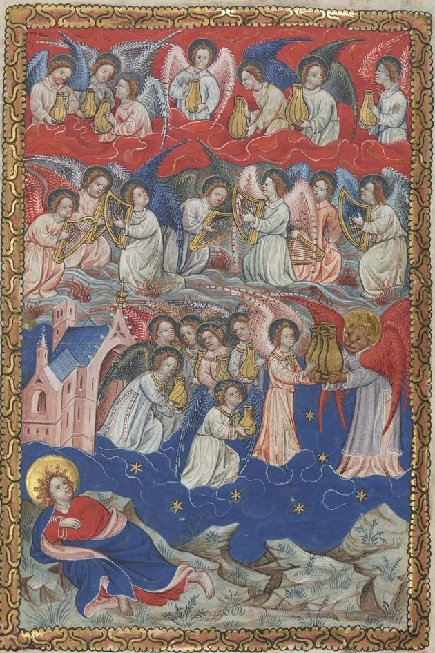

Apocalipsis 15 — La Traducción Mister

⚠ Un iluminador flamenco pone todo el capítulo en una página, junto al versículo 2, los arpistas de pie sobre «un mar de vidrio mezclado con fuego», con llamas en el agua, y el versículo 7, uno de los cuatro seres vivientes entregando las siete copas de oro a los ángeles junto al templo. El pintor dibuja las copas como jarras, y pone a Juan mirando desde la orilla de Patmos.

Notas del traductor
«Y vi otra señal en el cielo, grande y admirable: siete ángeles que tenían siete plagas, las últimas, porque en ellas se consuma el furor de Dios». El libro cuenta sus señales: «una gran señal apareció en el cielo» (Apocalipsis 12:1), «otra señal» (12:3), y ahora una tercera. Plēgḗ, «plaga», literalmente un golpe, está en quince versículos del Apocalipsis. «Las últimas» va después del sustantivo en griego, como un segundo pensamiento: después de estas no hay más. «Se consuma» es teléō en aoristo, que dice como ya hecho lo que está por ocurrir, el verbo de «el misterio de Dios se cumpliría» (Apocalipsis 10:7); vuelve en el versículo 8. «Furor» es thymós, como en el vino y el lagar del capítulo 14 (diccionario). La RV60 lee «porque en ellas se consumaba la ira de Dios»; la TNM 1987 lee «por medio de ellas la cólera de Dios queda terminada»; la NVI lee «pues con ellas se consumará la ira de Dios».
«Y vi como un mar de vidrio mezclado con fuego, y a los que salen vencedores de la bestia y de su imagen y del número de su nombre, de pie sobre el mar de vidrio, con arpas de Dios». El mar es el que está delante del trono, «como un mar de vidrio semejante al cristal» (Apocalipsis 4:6), ahora con fuego dentro; hyálinos, «de vidrio», está solo en esos dos versículos. «Salen vencedores de» guarda la extraña unión griega de nikáō, «vencer», con ek, «de», «fuera de», una victoria que es también una salida (diccionario); la imagen y «el número de su nombre» son los de Apocalipsis 13:17–18. «Sobre el mar» es epí con acusativo, que también puede ser «junto a»; la imagen de un pueblo de pie junto al mar, cantando, es la del Éxodo, donde Israel cruzó y «Moisés y los hijos de Israel cantaron este cántico a Jehová» (Éxodo 15:1). Las arpas son las de Apocalipsis 5:8 y 14:2. La RV60 lee «a los que habían alcanzado la victoria sobre la bestia y su imagen, y su marca», añadiendo «su marca»; la TNM 1987 lee «de pie al lado del mar vítreo, a los que salen victoriosos de la bestia salvaje»; la NVI lee «De pie, a la orilla del mar».
«Y cantan el cántico de Moisés, el esclavo de Dios, y el cántico del Cordero, diciendo: “Grandes y admirables son tus obras, Jehová Dios, el Todopoderoso; justos y verdaderos son tus caminos”». Moisés cantó junto al mar (Éxodo 15:1), y después del cruce el pueblo temió a Jehová, y «creyeron en Jehová y en Moisés su siervo» (Éxodo 14:31); «esclavo» es doûlos, como de Juan y de los profetas en este libro (Apocalipsis 10:7). Las palabras que se cantan no son las de Éxodo 15. Están reunidas de los Salmos y de la Ley: «Grandes son las obras de Jehová» (Salmo 111:2), «Maravillosas son tus obras» (Salmo 139:14), y «todos sus caminos son justicia … justo y recto es él» del otro cántico de Moisés (Deuteronomio 32:4). «Jehová Dios, el Todopoderoso» es el título de Apocalipsis 4:8 y 11:17; el griego lee kýrie ho theòs ho pantokrátōr. La RV60 lee «Grandes y maravillosas son tus obras, Señor Dios Todopoderoso»; la TNM 1987 lee «Grandes y maravillosas son tus obras, Jehová Dios, el Todopoderoso».
⚠ «Rey de los siglos». Las ediciones se dividen en tres. Westcott-Hort, seguido por el griego impreso aquí, lee aiṓnōn, «de los siglos», el título de «al Rey de los siglos, inmortal, invisible» en 1 Timoteo 1:17. Tregelles, la 28.ª edición de Nestle-Aland y el texto bizantino leen ethnôn, «de las naciones», que concuerda con «todas las naciones» de la línea siguiente y con el «¿Quién no te temerá, Rey de las naciones?» de Jeremías (Jeremías 10:7). El Texto Recibido impreso tiene «de los santos». La TNM 1987 lee «Rey de la eternidad»; la NVI lee «Rey de las naciones»; la RV60 lee «Rey de los santos».
«¿Quién no temerá, Jehová, y no glorificará tu nombre? Porque solo tú eres santo; porque todas las naciones vendrán y adorarán delante de ti, porque tus actos de justicia han sido manifestados». La pregunta es la de Jeremías que se acaba de citar, y la promesa es de un salmo: «Todas las naciones que hiciste vendrán y adorarán delante de ti» (Salmo 86:9). El griego es kýrie, aquí el Dios de Israel, por eso esta traducción pone «Jehová». «Santo» es hósios, no el habitual hágios (diccionario): piadoso, apartado por la fidelidad, la palabra de «tu santo» en la cita del Salmo que hace Pedro (Hechos 2:27) y del sumo sacerdote «santo, inocente, sin mácula» (Hebreos 7:26). Hósios está en ocho versículos; el texto bizantino tiene aquí hágios. «Actos de justicia» es dikaiṓmata, hechos o decretos justos. El texto bizantino añade «te» después de «temerá». La RV60 lee «¿Quién no te temerá, oh Señor, y glorificará tu nombre? pues solo tú eres santo»; la TNM 1987 lee «porque solo tú eres leal», y «tus justos decretos».
«Y después de estas cosas miré, y fue abierto en el cielo el templo de la tienda del testimonio». «La tienda del testimonio» es el tabernáculo del desierto que guardaba las tablas, como dice Esteban: «La tienda del testimonio estaba con nuestros padres en el desierto» (Hechos 7:44). El templo del cielo ya se abrió una vez, y en él se vio el arca (Apocalipsis 11:19) (diccionario). La RV60 lee «el templo del tabernáculo del testimonio»; la TNM 1987 lee «el santuario de la tienda del testimonio»; la NVI lee «la tienda con las tablas del pacto».
⚠ «Y salieron del templo los siete ángeles que tenían las siete plagas, vestidos de lino puro y resplandeciente, y ceñidos alrededor del pecho con cintos de oro». Una sola letra divide las ediciones: línon, «lino», en la 28.ª edición de Nestle-Aland y el texto bizantino, impreso aquí, y líthon, «piedra», en Westcott-Hort y Tregelles, ángeles vestidos de «piedra pura y resplandeciente». Los que mantienen «piedra» comparan la cubierta enjoyada de Ezequiel 28:13, «toda piedra preciosa era tu cubierta»; la ASV inglesa sigue a Westcott-Hort, «arrayed with precious stone». El cinto de oro es el que lleva la figura semejante a un hijo de hombre, «ceñido por el pecho con un cinto de oro» (Apocalipsis 1:13, ya en estas páginas). La RV60 lee «vestidos de lino limpio y resplandeciente»; la TNM 1987 lee «vestidos de lino limpio y brillante».
«Y uno de los cuatro seres vivientes dio a los siete ángeles siete copas de oro llenas del furor de Dios, que vive por los siglos de los siglos». Phiálē, «copa», está en doce versículos, todos en el Apocalipsis (diccionario). El primero es el de los ancianos, «copas de oro llenas de incienso, que son las oraciones de los santos» (Apocalipsis 5:8); las mismas copas de oro están ahora llenas de furor. «Que vive por los siglos de los siglos» es el título de Apocalipsis 4:9. La RV60 lee «siete copas de oro, llenas de la ira de Dios»; la TNM 1987 lee «siete tazones de oro»; la NVI lee «una copa de oro llena del furor de Dios».
«Y el templo se llenó de humo por la gloria de Dios y por su poder … hasta que se consumaran las siete plagas de los siete ángeles». El humo y la puerta cerrada son los de la dedicación del tabernáculo, «Moisés no pudo entrar en la tienda de reunión, porque la nube se había posado sobre ella, y la gloria de Jehová llenaba el tabernáculo» (Éxodo 40:35), de la del templo, donde los sacerdotes no podían estar en pie para ministrar (1 Reyes 8:11), y de la visión de Isaías, «la casa se llenó de humo» (Isaías 6:4). «Se consumaran» es otra vez teléō, como en el versículo 1. La RV60 lee «hasta que se hubiesen cumplido las siete plagas de los siete ángeles»; la RV 1909 lee «lleno de humo por la majestad de Dios»; la TNM 1987 lee «el santuario se llenó de humo a causa de la gloria de Dios».
Patrones que vale la pena recordar
Lo que este capítulo responde. El capítulo 14 anunció la copa del furor de Dios; este la reparte. Antes de que se derrame una sola copa, los vencedores están junto a un mar de vidrio y cantan el cántico de Moisés, de modo que las últimas plagas quedan enmarcadas por un nuevo Éxodo: como las plagas de Egipto vinieron antes del cruce y del cántico, estas vienen después. Luego el templo se llena de humo, y queda cerrado hasta que las plagas se consuman.
Dónde esta traducción mantiene las palabras exactas: «las últimas», después del sustantivo; «se consuma», como en 10:7 y otra vez en el versículo 8; «un mar de vidrio», como en 4:6; «salen vencedores de»; «el esclavo de Dios»; «Jehová Dios, el Todopoderoso», como en 4:8 y 11:17; «Rey de los siglos», con las otras lecturas en la nota; «santo» por hósios; «la tienda del testimonio», como en Hechos 7:44; «lino», con «piedra» en la nota; y «copas», como en 5:8.
Ecos cumplidos. Los siete ángeles con las siete últimas plagas, anunciados al final de Apocalipsis 14; el furor de Dios de Apocalipsis 14:10; el mar de vidrio de Apocalipsis 4:6; la imagen y el número de la bestia de Apocalipsis 13:17; las arpas de Apocalipsis 14:2; las copas de oro de Apocalipsis 5:8; el templo abierto de Apocalipsis 11:19; y el cinto de oro de Apocalipsis 1:13 (ya en estas páginas).
Ecos sembrados. Las siete copas derramadas en el capítulo 16: en la tercera, el ángel de las aguas llama a Dios el Santo con el mismo hósios (16:5), y en la séptima una gran voz del templo dice «Ha sucedido» (16:17).
Lo siguiente en este libro: Apocalipsis 16, ya en estas páginas. Las siete copas del furor de Dios derramadas: úlceras, el mar y los ríos hechos sangre, un sol que quema, tinieblas sobre el trono de la bestia, el Éufrates secado, los reyes reunidos en el lugar llamado Armagedón, y un gran terremoto.